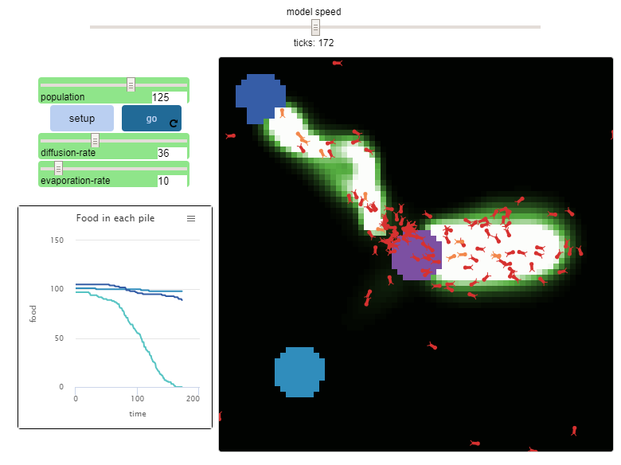

Home
Portfolio
About Me
This is my Portfolio Page!


My app!

Our project was a definite integral calculator.
Our project worked, but only worked for correct inputs, however whenever the input would be slightly wrong, it would not work.
To make my project better, I could have it work for erroneous inputs such as sin(x or sinx.
To sell this product, I would have to show some sort of steps so that students could learn from the integral question.
This was a simple decision project to practice if statements in python.
This is a simple simulation game, for the monty hall game, but made in python.
This is an example in image manipulation in python.
This was a program in python meant to display data in the form of a graph.
Q: What states had the most gun instances since 2013-2018?

A: Florida
In the net logo project, we decided to try to change the Ants project
What we did was we toyed with the logic in its movement.

